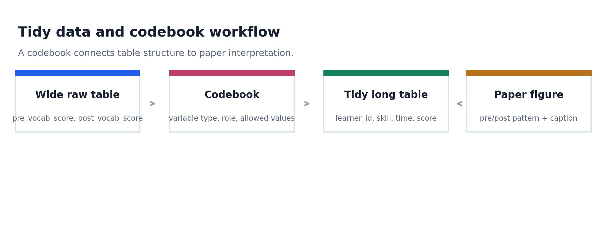
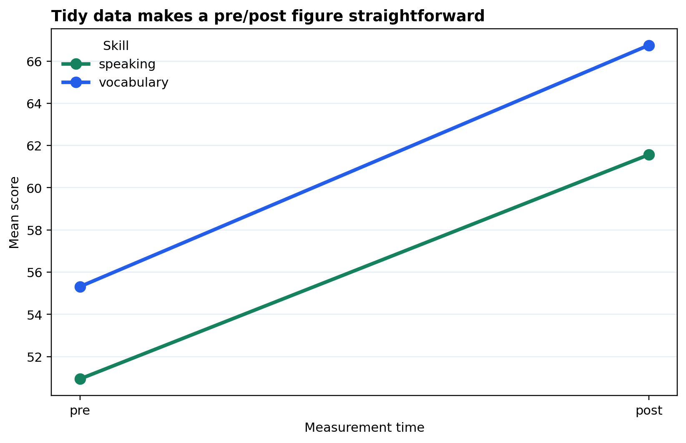

Wide table
Đọc bảng có nhiều cột pre/post và xác định row meaning ban đầu.
Read a table with multiple pre/post columns and identify the original row meaning.
Học cách biến bảng wide thành bảng tidy, rồi viết codebook để figure không còn là một hình vẽ mơ hồ. Đây là nền quan trọng nhất trước cleaning, transform và chart families.
Learn how to turn wide tables into tidy tables, then write a codebook so a figure is no longer an ambiguous drawing. This is the key foundation before cleaning, transformation, and chart families.

Module này không bắt đầu bằng chart. Nó bắt đầu bằng schema: identifier, variable type, allowed values, unit of observation và vai trò của từng biến trong lập luận.
This module does not begin with a chart. It begins with schema: identifiers, variable types, allowed values, unit of observation, and each variable's role in the argument.
Đọc bảng có nhiều cột pre/post và xác định row meaning ban đầu.
Read a table with multiple pre/post columns and identify the original row meaning.
Ghi variable type, role, allowed values và paper note cho từng cột.
Record variable type, role, allowed values, and paper note for each column.
Dùng `melt()` để tạo bảng learner-skill-time.
Use `melt()` to create a learner-skill-time table.
Vẽ pre/post figure, export và viết caption nêu unit sau khi reshape.
Draw a pre/post figure, export it, and write a caption naming the reshaped unit.
Bảng learner survey giúp thấy wide-to-long. Bảng education indicator giúp chuyển nhiều chỉ số thành `indicator_name` và `indicator_value`. Transfer bank giúp áp dụng sang hướng research của học viên.
The learner survey shows wide-to-long reshaping. The education indicator table turns several measures into `indicator_name` and `indicator_value`. The transfer bank applies the same thinking to learner research directions.
Một dòng là một learner, nhưng nhiều measure đang nằm thành cột wide.
One row is one learner, but repeated measures are stored as wide columns.
CSVMột dòng là country-year-school-level trước khi melt indicator columns.
One row is country-year-school-level before melting indicator columns.
CSVCác kịch bản chuyển giao cho education policy, TCSOL, translation và contrastive linguistics.
Transfer scenarios for education policy, TCSOL, translation, and contrastive linguistics.
CSVTrước reshape, một dòng là một learner. Sau reshape, một dòng là một learner, một skill, một time point. Caption phải nói rõ điều này.
Before reshaping, one row is one learner. After reshaping, one row is one learner, one skill, and one time point. The caption must say this clearly.
| Step | Python action | Paper meaning |
|---|---|---|
| 1 | pd.read_csv() | Read the raw table and preserve the source path. |
| 2 | codebook[["variable_name", "variable_type"]] | State what each column is before plotting. |
| 3 | pd.melt(...) | Change repeated wide columns into tidy rows. |
| 4 | groupby(["skill", "time"]) | Summarize by variables that the codebook defines. |

Figure pre/post nhìn đơn giản, nhưng phía sau nó là codebook giải thích `skill`, `time`, `score`, và row meaning sau khi reshape.
The pre/post figure looks simple, but behind it is a codebook explaining `skill`, `time`, `score`, and row meaning after reshaping.
Nếu học viên phân biệt được raw row meaning và tidy row meaning, họ đã sẵn sàng học cleaning: missing values, duplicate, label normalization và type conversion.
If the learner can distinguish raw row meaning from tidy row meaning, they are ready for cleaning: missing values, duplicates, label normalization, and type conversion.
{kind=link}
{kind=link}